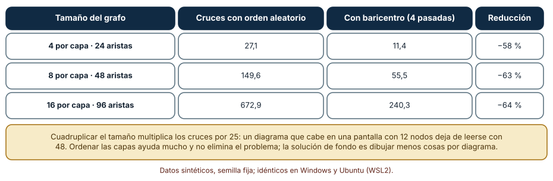
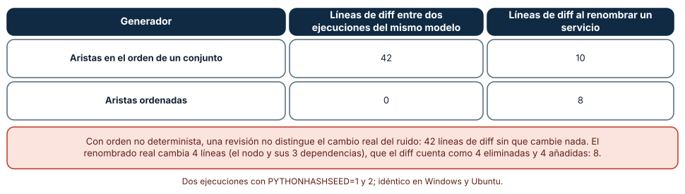
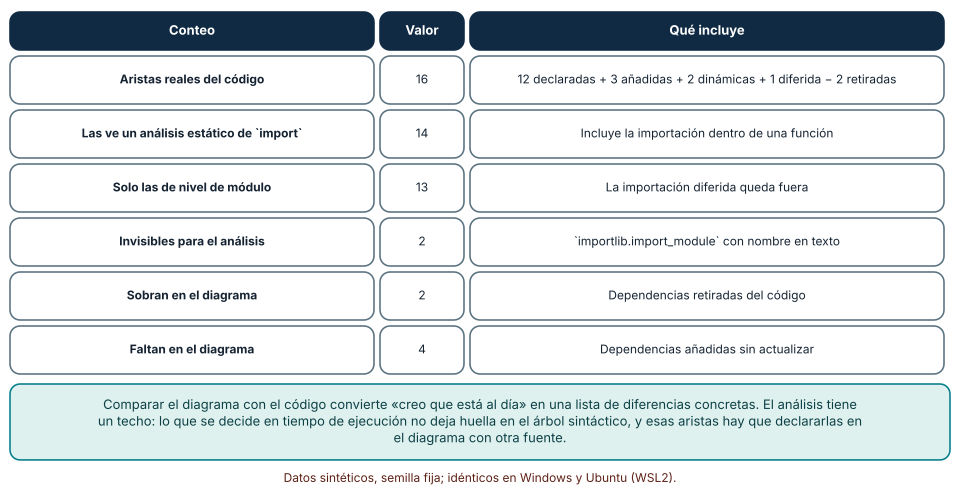

← SE-208 — ADRs, RFCs y registro de decisiones · ↑ Parte 17 · 📚 Índice completo · 🌐 Portal · SE-210 — API docs, ejemplos y contratos publicados →
Punto profesional y fundamento pedagógico
Punto profesional. La clase existe para que decidas cuándo un diagrama enseña algo que un párrafo no puede, cómo evitar que se vuelva ilegible o mentiroso, y cómo mantenerlo de forma que su diferencia con el código se pueda ver. Un diagrama es una afirmación sobre el sistema y debe poder contrastarse como cualquier otra.
Por qué aparece aquí. Se sitúa después de ADRs, RFCs y registro de decisiones y antes de API docs, ejemplos y contratos publicados: las decisiones dicen por qué, los diagramas muestran estructura y relaciones, y la clase siguiente documenta lo que otros consumen. Retoma los modelos de la Parte 13 desde el lado de la comunicación y adelanta el diagrama como código que SE-212 automatiza.
Error conceptual que debe corregir. Creer que un diagrama más completo es un diagrama mejor, o que dibujar es documentar. Un diagrama con todo no responde a ninguna pregunta, y un dibujo hecho a mano sin una forma de compararlo con el sistema envejece sin que nadie lo note.
Límite de la conclusión. Los grafos son sintéticos (capas y paquetes de diez módulos), el generador es una función de quince líneas y las medidas de cruces usan una heurística clásica sin herramientas de producción. No se evaluó ningún diagrama real ni se midió cuánto comprende quien los lee.
Trazabilidad fuente → afirmación
| Fuente primaria u oficial | Afirmación que respalda | Lo que no prueba |
|---|---|---|
| Moody, «The Physics of Notations» (IEEE TSE, 2009) | Propone principios de diseño de notaciones visuales, como la economía gráfica y la gestión de la complejidad, con base en la ciencia cognitiva. | No evalúa las notaciones usadas por un equipo concreto. |
| Kruchten, «The 4+1 View Model of Architecture» (IEEE Software, 1995) | Defiende describir la arquitectura mediante varias vistas, cada una para unas partes interesadas, unidas por escenarios. | No fija cuántas vistas necesita un sistema. |
| Sugiyama, Tagawa y Toda (IEEE Trans. SMC, 1981) | Describe métodos para ordenar grafos jerárquicos en capas reduciendo cruces, entre ellos el baricentro. | No garantiza el mínimo de cruces. |
Antes de empezar
Retoma el registro de decisiones de SE-208. Una decisión dice «usamos una cola entre la plataforma y la secretaría»; un diagrama muestra cómo se conectan las piezas. La pregunta activa es: ¿qué pregunta responde este diagrama, para quién, y qué haría falta para saber que sigue siendo verdad?
Prerrequisitos
- Haber completado
SE-208o poder explicar la diferencia entre una decisión y su estructura. - Python 3.11 o posterior y un terminal; los experimentos usan solo la biblioteca estándar y
gitno es necesario. - Trabajar con la plataforma de entregas y módulos sintéticos; no se analiza código real.
Problema auténtico
El diagrama de arquitectura de la plataforma está en una presentación de hace dos años. Muestra doce cajas y treinta flechas que se cruzan como una red de pesca. Una colaboradora lo usa para decidir dónde añadir la importación de notas y descubre, al implementarla, que existe una dependencia entre dos módulos que el diagrama no dibuja, y que otra, que sí dibuja, se retiró hace un año. Cuando intenta actualizarlo, el programa de dibujo reordena todo y la diferencia con la versión anterior es ilegible. Nadie confía en el diagrama ni lo corrige.
Objetivos observables
Al terminar podrás:
- formular la pregunta que responde un diagrama y elegir su nivel de abstracción, su audiencia y lo que deja fuera;
- medir cuántos cruces de aristas produce un dibujo y cuánto reduce una ordenación por capas al crecer el grafo;
- generar un diagrama desde un modelo de forma determinista, de modo que su diferencia entre versiones refleje solo cambios reales;
- comparar un diagrama de dependencias con las importaciones del código y nombrar las aristas que el análisis no ve;
- añadir una alternativa textual a un diagrama y decidir qué parte de su información debe estar también en prosa.
Mapa conceptual
Ver la notación fuente del diagrama
flowchart LR
A[Pregunta y audiencia] --> B[Nivel de abstracción]
B --> C[Modelo en texto]
C --> D[Diagrama generado]
C --> E[Alternativa textual]
D --> F[Comparación con el código]
F -->|diferencias| CEl diagrama se lee de izquierda a derecha: la pregunta y la audiencia fijan el nivel de abstracción; el modelo vive en texto y de él se generan el dibujo y su descripción alternativa; una comparación con el código devuelve las diferencias al modelo. No es un flujo obligatorio: un diagrama puede nacer de una pizarra. Lo que el esquema propone es que, para el que se mantiene, el texto sea la fuente y el dibujo una vista.
Temas y por qué importan
| Tema | Por qué cambia una decisión profesional | Evidencia mínima |
|---|---|---|
| Pregunta del diagrama | Un diagrama sin pregunta intenta mostrarlo todo y no sirve para nada. | Frase «este diagrama responde a…» en el encabezado |
| Nivel de abstracción | Contexto, contenedores, componentes y código son vistas distintas; mezclarlas confunde. | Diagrama marcado con su nivel |
| Legibilidad y cruces | Los cruces crecen más rápido que el grafo; pasado cierto tamaño, no se lee. | Número de cruces y límite de elementos por diagrama |
| Diagrama como código | El texto se revisa, se compara y se genera; el dibujo a mano no. | Generador determinista y diff estable |
| Vigencia y accesibilidad | Un diagrama que no se compara con el código miente, y uno sin alternativa textual excluye. | Comparación con importaciones y descripción textual |
Conceptos y decisiones
1. Una pregunta y una audiencia
Un diagrama es útil cuando responde a una pregunta concreta de una audiencia concreta: «¿qué sistemas externos toca la plataforma?», «¿en qué orden se llaman estos servicios?», «¿qué módulos dependen de este?». Sin pregunta, el diagrama acumula elementos hasta que todo cabe y nada se distingue. La pregunta también marca lo que se deja fuera: un diagrama de contexto no dibuja módulos internos. Escribir la pregunta en el encabezado obliga a decidir antes de dibujar, y permite a quien revisa preguntarse si el diagrama la contesta.
2. Notación y economía gráfica
Moody propone principios para que una notación visual funcione con las capacidades del cerebro humano: que cada símbolo signifique una sola cosa, que los símbolos se distingan a simple vista, que haya mecanismos para gestionar la complejidad (dividir en subdiagramas) y que se use la menor cantidad de elementos gráficos posible. La consecuencia práctica es modesta: usa pocos tipos de caja y de flecha, dales un significado fijo con una leyenda, y no uses el color como único portador. Un diagrama que necesita cuatro leyendas para entenderse probablemente intenta decir cuatro cosas.
3. Vistas y niveles
Ningún dibujo captura un sistema. Kruchten propone cuatro vistas (lógica, de procesos, de desarrollo y física) unidas por escenarios; el modelo C4 propone cuatro niveles de zoom (contexto, contenedores, componentes y código). Ambos dicen lo mismo: cada diagrama debe declarar su vista o nivel y no mezclar. En la plataforma, el diagrama de contexto muestra a estudiantes, docentes y secretaría con la plataforma como una caja; el de contenedores separa la interfaz, el servicio de cálculo y la base de datos; el de componentes abre solo el servicio de cálculo. Un diagrama que mezcla niveles obliga a leer cada caja con una escala distinta.
4. Diagrama como código
Un diagrama escrito en texto (por ejemplo con Mermaid) se revisa en un pull request, se compara con el anterior y puede generarse desde un modelo. Esto resuelve el problema del dibujo que nadie se atreve a tocar, pero crea otro: la salida generada debe ser estable. Si el generador recorre un conjunto en un orden que cambia entre ejecuciones, cada regeneración produce un diff aunque el modelo no cambie, y la revisión se llena de ruido. La regla es que el generador ordene todo lo que emite y que el diagrama sea una vista del modelo, no una segunda fuente de verdad.
5. Vigencia y accesibilidad
Un diagrama afirma que dos cosas se relacionan; esa afirmación puede contrastarse con el código. Comparar un diagrama de dependencias con las importaciones reales convierte «creo que está al día» en una lista de diferencias. Y un diagrama es información que debe llegar a quien no lo ve: los lineamientos de accesibilidad piden una alternativa textual que transmita lo esencial, y para imágenes complejas, una descripción más larga junto a la figura. El texto alternativo no repite las cajas; dice qué relación importa.
Cruces de aristas al crecer el grafo
Se generan 150 grafos de cuatro capas por tamaño, con 4, 8 y 16 nodos por capa, cada nodo conectado a dos de la capa siguiente. Se cuenta el número de pares de aristas que se cruzan entre capas contiguas con el orden aleatorio de nodos y con el método del baricentro (cada nodo se coloca en el promedio de las posiciones de sus vecinos, en cuatro pasadas).
def cruces(capas, aristas):
pos = {n: i for capa in capas for i, n in enumerate(capa)}
total = 0
for (a1, b1), (a2, b2) in combinations(aristas_entre_capas, 2):
if (pos[a1] - pos[a2]) * (pos[b1] - pos[b2]) < 0:
total += 1
return totalResultado, idéntico en Windows (CPython 3.12.9) y Ubuntu (3.12.3): con 4 nodos por capa (24 aristas), 27,1 cruces con orden aleatorio y 11,4 con baricentro; con 8 (48 aristas), 149,6 y 55,5; con 16 (96 aristas), 672,9 y 240,3. Cuadruplicar el número de nodos multiplica los cruces por unos 25.

Cómo leer la figura. Cada fila es un tamaño de grafo; las columnas dan los cruces medios con cada método y la reducción porcentual. Dónde deja de valer: el baricentro es una heurística, no un óptimo, y minimizar cruces es un problema difícil; con más densidad el resultado cambia. Los cruces miden una dimensión de la legibilidad, no la comprensión: un diagrama con pocos cruces puede ser confuso por otras razones (símbolos ambiguos, nivel mezclado).
Un generador estable frente a uno que reordena
Se define un modelo de 12 servicios con 18 dependencias y un generador que emite Mermaid. Una versión recorre el conjunto de aristas en el orden de iteración de Python; la otra lo ordena. Se ejecuta cada una dos veces con PYTHONHASHSEED distinto sobre el mismo modelo, y después con un servicio renombrado, contando las líneas distintas con difflib.
aristas = {(a, b) for a, b in modelo["edges"]}
if modo == "sorted":
nodos, aristas = sorted(nodos), sorted(aristas)
lineas = ["flowchart LR"] + [f" {n}[{n}]" for n in nodos] + [f" {a} --> {b}" for a, b in aristas]Con el generador que recorre un conjunto, dos ejecuciones del mismo modelo difieren en 42 líneas, sin ningún cambio real; renombrar un servicio produce 10 líneas de diff. Con el generador ordenado, dos ejecuciones del mismo modelo difieren en 0 líneas y renombrar un servicio produce 8 (4 líneas cambiadas, que el diff cuenta como 4 eliminadas y 4 añadidas). Los resultados fueron idénticos en Windows y Ubuntu.

Cómo leer la figura. Cada fila es un generador; las columnas son las líneas de diff entre dos ejecuciones del mismo modelo y tras renombrar un servicio. Dónde deja de valer: el ruido de 42 líneas depende de que el orden de un conjunto de cadenas varía con la semilla de hash por proceso; con claves enteras el orden sería estable y el problema no se vería. Ordenar da un diff mínimo, pero el orden alfabético puede no ser el que mejor lee el dibujo: estabilidad y estética son objetivos distintos.
El diagrama frente a las importaciones del código
Se genera un paquete sintético de diez módulos con 12 dependencias declaradas en el diagrama. Luego se modifica el código: se añaden 3 importaciones nuevas, se retiran 2, se incluyen 2 importaciones dinámicas con importlib.import_module y una importación dentro de una función. Un análisis con ast recoge las importaciones y se compara con lo declarado.
for nodo in ast.walk(ast.parse(codigo)):
if isinstance(nodo, ast.ImportFrom) and nodo.module == "plat":
for alias in nodo.names:
vistas.add((modulo, alias.name))De las 16 dependencias reales, el análisis ve 14 (13 si solo se miran las importaciones de nivel de módulo, porque la importación dentro de una función queda fuera). Las 2 dinámicas son invisibles. El diagrama declarado tiene 2 aristas de más (dependencias retiradas) y le faltan 4 (3 añadidas y la importación diferida). Los resultados fueron idénticos en ambos sistemas.

Cómo leer la figura. Cada fila cuenta un grupo de dependencias; la última columna dice qué incluye. Dónde deja de valer: el paquete es sintético y de solo una forma de importación; en uno real hay importaciones relativas, condicionales, de paquetes externos y cargas por configuración. Lo que se decide en ejecución no deja rastro sintáctico y se declara en el modelo con otra fuente, o se acepta como límite.
Definiciones de trabajo
- diagrama: representación visual de una parte del sistema que responde a una pregunta de una audiencia.
- nivel de abstracción: grado de detalle de un diagrama, desde el contexto del sistema hasta el código.
- cruce de aristas: par de líneas de un dibujo de grafo que se intersecan sin ser vecinas.
- diagrama como código: diagrama definido en un texto del que se genera el dibujo, y que se versiona y revisa como código.
- alternativa textual: descripción en texto de lo esencial de un diagrama, disponible para quien no lo ve.
Las definiciones son operativas para el portal; no reemplazan las de las fuentes enlazadas abajo.
Ejemplo mínimo
El fragmento genera un diagrama Mermaid ordenado desde un modelo. Antes de ejecutarlo, predice cuántas líneas tiene la salida.
modelo = [("interfaz", "servicio"), ("servicio", "base"), ("servicio", "cola")]
nodos = sorted({n for e in modelo for n in e})
lineas = ["flowchart LR"] + [f" {n}[{n}]" for n in nodos] + [f" {a} --> {b}" for a, b in sorted(modelo)]
print("\n".join(lineas)); print(len(lineas))La predicción correcta es 8 líneas: 1 de cabecera, 4 nodos y 3 aristas. Registra versión del intérprete y salida; si añades una dependencia, predice el nuevo número.
Ejemplo profesional
El portal de la plataforma de entregas guarda un archivo modelo.json con servicios y dependencias, un generador que emite tres diagramas (contexto, contenedores y componentes del servicio de cálculo) y un comprobador que compara las aristas con las importaciones del paquete en cada pull request. Cada diagrama lleva una frase «responde a…» y una alternativa textual de tres líneas. Cuando alguien añade la importación de notas, el comprobador falla con «falta la arista servicio → importador en el modelo», y el cambio del modelo regenera los diagramas con un diff mínimo.
Compara el caso normal con tres casos límite: el diagrama con más de veinte elementos (se divide por nivel), la dependencia cargada por configuración (se declara en el modelo con una nota) y el diagrama de secuencia que cambia con el orden de llamadas (se comprueba con una traza en una prueba de integración, no con importaciones).
Práctica guiada
- Crea
work/SE-209/y escribe el modelo de la plataforma con doce servicios y sus dependencias. - Escribe el generador y comprueba que dos ejecuciones con distinta semilla de hash producen la misma salida.
- Genera el diagrama con orden aleatorio y con ordenación por baricentro y cuenta los cruces.
- Añade a cada diagrama la frase «responde a…» y una alternativa textual de tres líneas.
- Crea un paquete de diez módulos con importaciones y escribe el comparador con
ast. - Modifica el código (añade, retira, importa dinámicamente) y lista las diferencias que ve y las que no.
- Pide a una persona ajena que responda la pregunta del diagrama usando solo la alternativa textual.
- Entrega
diagramas.mdcon las diferencias y los cambios.
Ejercicios
- Pregunta: escribe tres preguntas distintas que un diagrama de la plataforma podría responder y elige a qué nivel respondería cada una.
- Cruces: mide los cruces con 6 nodos por capa y 3 capas y compara con las predicciones de los tamaños de la clase; explica qué cambió.
- Generador: modifica el generador para que ordene por grado de salida y compara el diff con el orden alfabético al renombrar un servicio.
- Comparador: extiende el análisis para detectar importaciones relativas y mide cuántas aristas nuevas ve.
Reto verificable
Entrega el modelo, el generador, tres diagramas con su pregunta y su alternativa textual, el comparador y el registro de diferencias. Se aprueba si otra persona regenera los diagramas desde un checkout limpio con distinta semilla de hash y obtiene una salida idéntica, reproduce los conteos de cruces y puede nombrar una arista del código que el comparador no vería.
Caso conductor
Los diagramas del portal de la plataforma de entregas se generan del modelo y se comparan con el código. Esta clase deja el modelo en texto, el generador estable y el comparador, que SE-212 integra en la integración continua, y la costumbre de acompañar cada figura de texto alternativo, que SE-214 extiende a las máquinas.
Preguntas frecuentes
¿Un diagrama en un programa gráfico es siempre peor?
No. Para explorar una idea o explicar en una pizarra, el dibujo libre es más rápido. Pierde cuando debe mantenerse: no se compara, no se revisa con diff y envejece sin aviso. Si un diagrama va a vivir años, su fuente debe ser texto.
¿Cuántos elementos caben en un diagrama?
Depende de la pregunta, pero los cruces crecen más rápido que los nodos: del experimento, cuadruplicar los nodos multiplica los cruces por 25. Como regla de partida, si no cabe en una pantalla sin que las líneas se crucen, divide por nivel o por pregunta.
¿El texto alternativo repite el diagrama?
No: dice lo esencial que quien ve el diagrama entendería. Para uno de dependencias, qué módulos dependen de cuáles y cuál es el punto central; para uno de secuencia, el orden de los pasos. Un diagrama complejo lleva además una descripción larga junto a la figura.
¿Cómo sé que un diagrama de secuencia es correcto?
Con una traza real: una prueba de integración que registre las llamadas y la compare con la secuencia dibujada. Las importaciones no sirven para eso, porque el orden de llamadas se decide en ejecución.
Fallo controlado y diagnóstico
Reproduce el fallo clásico de la clase: un diagrama con una dependencia que ya no existe. Retira del código la importación del módulo m04 desde m09 y ejecuta el comparador.
Registra síntoma, entrada mínima, hipótesis, observación que discrimina, causa, corrección y prueba de regresión. Síntoma: alguien evita tocar m04 porque el diagrama dice que m09 depende de él. Hipótesis rivales: (a) la dependencia sigue existiendo por otra vía; (b) el diagrama está desactualizado; (c) el análisis no ve una importación dinámica. Observación que discrimina: busca importaciones dinámicas con importlib y revisa la configuración; si no hay, descarta (c); busca la arista en las importaciones reales, y si no aparece, confirma (b). Causa: la dependencia se retiró y el diagrama no se regeneró. Corrección: actualizar el modelo y regenerar. Prueba de regresión: el comparador en la integración continua, que marca las aristas «de más». Recuperación: avisar a quien tomó una decisión con el diagrama y revisarla.
Errores comunes y cómo corregirlos
| Síntoma | Causa probable | Corrección |
|---|---|---|
| El diagrama tiene cuarenta cajas y no se entiende | No tiene pregunta ni nivel | Escribir la pregunta, dividir por nivel y dejar fuera lo que no la contesta |
| Cada regeneración produce un diff enorme | El generador no ordena su salida | Ordenar nodos y aristas, y fijar la semilla de hash en la comprobación |
| El diagrama muestra una dependencia retirada | Se dibujó a mano y no se compara con el código | Generarlo del modelo y comparar con las importaciones |
| Una flecha significa cosas distintas en el mismo dibujo | Notación sin leyenda ni significado fijo | Fijar un significado por símbolo y añadir una leyenda |
| Quien usa lector de pantalla no obtiene nada de la figura | No hay alternativa textual | Añadir una descripción de lo esencial y una larga si el diagrama es complejo |
Entorno y archivos clave
work/SE-209/
├── README.md
├── modelo.json
├── generador.py
├── diagramas/
│ ├── contexto.md
│ ├── contenedores.md
│ └── componentes-calculo.md
├── experimentos/
│ ├── cruces.py
│ ├── estable.py
│ └── importaciones.py
└── evidencia/diagramas.mdEl README declara plataforma, versión de Python, semillas y comandos. Los experimentos usan solo la biblioteca estándar (ast, difflib, itertools, random, subprocess) y se ejecutaron con CPython 3.12.9 en Windows 11 y 3.12.3 en Ubuntu bajo WSL2 con resultados idénticos. El paquete de diez módulos se crea en un directorio temporal y se elimina al terminar.
Seguridad, ética y accesibilidad
- un diagrama de arquitectura puede revelar superficie de ataque: decide qué se publica y qué queda restringido;
- no incluyas direcciones, nombres de máquinas ni rutas reales en los diagramas; usa nombres lógicos;
- escribe texto alternativo que transmita la relación esencial, no una lista de cajas, y añade una descripción larga junto a figuras complejas;
- no uses el color como único portador de significado: combina forma, etiqueta y estilo de línea;
- asegura un contraste suficiente y un tamaño de texto legible al ampliar;
- cita el nivel y la fecha del diagrama para que su vigencia sea comprobable.
Puente hacia el trabajo con agentes
Un agente al que se pide «dibuja la arquitectura» producirá un diagrama plausible a partir de los nombres de archivos, con dependencias que nunca comprobó. Pídele que genere el diagrama desde el modelo, que ejecute el comparador con las importaciones y que liste las aristas que no puede verificar (dinámicas, de configuración). Un agente también consume diagramas en texto: un modelo estructurado le sirve más que una imagen. Quien revisa comprueba que el diagrama responde a su pregunta, que la salida es estable y que el comparador se ejecutó, no solo que el dibujo es agradable.
Transferencia
Traslada la técnica a otro dominio (por ejemplo, un servicio de reparto con módulos de rutas, pagos y avisos): cambian los nodos y las dependencias, se conservan la pregunta explícita, el generador estable y la comparación con el código. La transferencia está lograda cuando puedes explicar qué parte del método depende del lenguaje de programación y cuál no.
Evaluación y evidencia
| Criterio | Evidencia para aprobar |
|---|---|
| comprensión | explicación de la pregunta, el nivel y la audiencia de cada diagrama con un ejemplo de la plataforma |
| corrección | conteos reproducibles de cruces y de diferencias entre diagrama y código con las mismas semillas |
| diseño | modelo en texto, generador estable y tres diagramas con alternativa textual |
| diagnóstico | reproducción del fallo «dependencia retirada que sigue dibujada» con regresión |
| incertidumbre | declaración de las aristas que el análisis no ve y de que el paquete es sintético |
| reproducibilidad | versiones, comandos, salida y límites declarados |
Fuentes
- Moody, «The Physics of Notations» (IEEE TSE, 2009) — principios de diseño de notaciones visuales; autoridad: IEEE Transactions on Software Engineering.
- Kruchten, «The 4+1 View Model of Architecture» (IEEE Software, 1995) — vistas de arquitectura unidas por escenarios; autoridad: IEEE Software.
- Sugiyama, Tagawa y Toda, «Methods for Visual Understanding of Hierarchical System Structures» (IEEE Trans. SMC, 1981) — ordenación por capas y reducción de cruces; autoridad: IEEE Transactions on Systems, Man, and Cybernetics.
- Modelo C4 — niveles de abstracción de diagramas de arquitectura; autoridad: proyecto C4 model.
- Mermaid: introducción — diagramas definidos en texto; autoridad: proyecto Mermaid.
- arc42 — plantilla de documentación de arquitectura; autoridad: proyecto arc42.
- W3C WAI: imágenes complejas — alternativas textuales para diagramas; autoridad: W3C.
- WCAG 2.2 — criterios de accesibilidad de contenido; autoridad: W3C.
- Python:
ast— análisis sintáctico del código para extraer importaciones; autoridad: documentación de Python.
Cada fuente respalda el mecanismo indicado; ninguna demuestra que generar diagramas desde un modelo mejore la comprensión en un equipo concreto ni que el baricentro sea óptimo. Esa afirmación depende del sistema y de quien lee.
Límites y siguiente paso
Se ejecutaron tres experimentos con datos sintéticos en Windows y Ubuntu (WSL2) con resultados idénticos. No se evaluó ningún diagrama real ni la comprensión de ningún lector: los grafos de capas, el modelo de doce servicios y el paquete de diez módulos son construcciones del autor, y el análisis de importaciones solo cubre una forma de importar. La siguiente clase documenta lo que otros consumen: la API, sus ejemplos y sus contratos.
Glosario
- diagrama: representación visual de una parte del sistema que responde a una pregunta de una audiencia.
- nivel de abstracción: grado de detalle de un diagrama, del contexto al código.
- cruce de aristas: par de líneas de un dibujo de grafo que se intersecan sin ser vecinas.
- diagrama como código: diagrama definido en texto del que se genera el dibujo y que se versiona como código.
- alternativa textual: descripción en texto de lo esencial de un diagrama.
← SE-208 — ADRs, RFCs y registro de decisiones · ↑ Parte 17 · 📚 Índice completo · 🌐 Portal · SE-210 — API docs, ejemplos y contratos publicados →